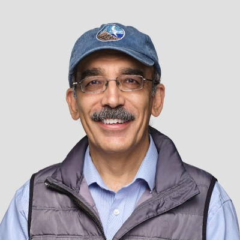

Ruchir Puri (IBM)
Title: The World of AI: The New Era Coming for Hardware and Software Design
Bio
Dr. Ruchir Puri is the Chief Scientist of IBM Research, an IBM Fellow, and Vice-President of IBM Technology. He led IBM Watson as its CTO and Chief Architect from 2016-19 and has held various technical, research, and engineering leadership roles across IBM's AI and research businesses. Dr. Puri is a Fellow of the IEEE, and has been an ACM Distinguished Speaker, an IEEE Distinguished Lecturer, and was awarded 2014 Asian American Engineer of the Year. Ruchir has been an adjunct professor at Columbia University, NY, and a visiting scientist at Stanford University, CA. He was honored with John Von-Neumann Chair at Institute of Discrete Mathematics at Bonn University, Germany. Dr. Puri is an inventor of over 75 United States patents and has authored over 125 scientific publications on software-hardware automation methods, microprocessor design, and optimization and AI algorithms. He is the co-founder of IEEE International Conference on LLM Aided Design (LAD) and is the recipient of the prestigious Distinguished Alumnus Award from Indian Institute of Technology (IIT), Kanpur in 2022.